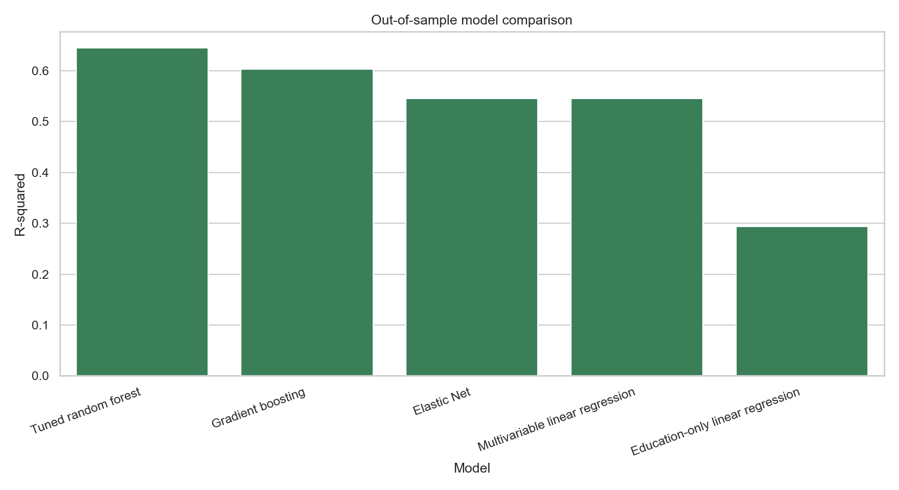
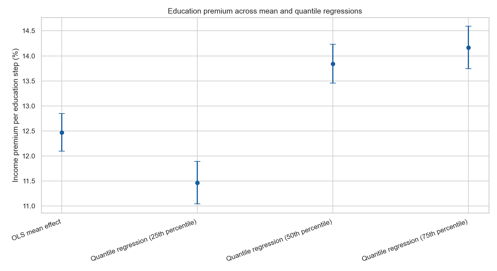

89,935
Valid records used in the analytical layer
This project studies how education relates to income in Korean welfare microdata. It now works as a stronger portfolio case because the modeling is broader, the best predictive model is tuned, and the final conclusion is easier to explain to a non-technical audience.
The case asks three practical questions. First, how much can education explain about income? Second, how much predictive power appears once age, household structure, region, and demographics are included? Third, does education pay off equally across the income distribution?
Before any model is trained, the data already show a clear socioeconomic pattern: income rises with education, and Seoul leads the regional distribution.


The repository now compares five out-of-sample predictive models, then complements that with coefficient-based econometrics. This combination is valuable because it shows both performance and interpretation.
| Model | MAE (USD) | RMSE (USD) | R-squared |
|---|---|---|---|
| Tuned Random Forest | 880.05 | 1,249.11 | 0.645 |
| Gradient Boosting | 950.31 | 1,321.48 | 0.603 |
| Elastic Net | 1,049.76 | 1,414.42 | 0.545 |
| Multivariable Linear Regression | 1,049.83 | 1,414.49 | 0.545 |
| Education-only Linear Regression | 1,345.40 | 1,762.56 | 0.294 |


The econometric layer gives the project a more interview-friendly conclusion. Instead of only saying that education predicts income, it shows that the education premium grows across the distribution.
